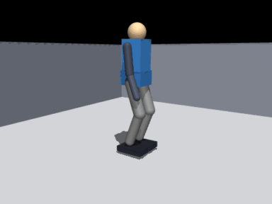
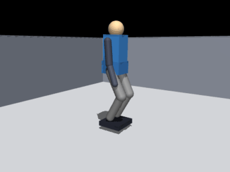
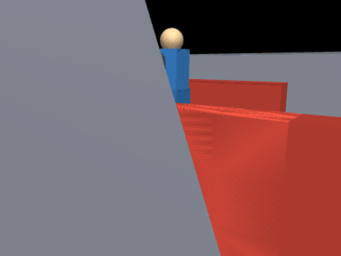

人形机器人 MuJoCo 物理仿真与神经网络建图导航
在 MuJoCo 中搭建 12 个驱动关节的双足人形机器人，完成物理仿真与键盘遥控、
激光/深度感知与轨迹控制、建图导航与 SLAM 同步仿真、端到端深度图驾驶四项任务。
感知、规划、控制与端到端网络均以纯 NumPy 实现，通过 ROS Noetic 话题封装，
roslaunch humanoid_mujoco_slam_nn_nav ... 一键启动。

项目结构概览
humanoid_mujoco_slam_nn_nav/
├── humanoid_mujoco_slam_nn_nav/ # 算法库
│ ├── model.py # MJCF 生成（机器人 + 三个场景）
│ ├── kinematics.py # 解析逆运动学 / 正运动学
│ ├── gait.py # 准静态双足步态
│ ├── sim.py # MuJoCo 仿真内核
│ ├── sensors.py # 激光 / 深度 / IMU / 里程计
│ ├── mapping.py # 对数几率栅格 + 扫描匹配 SLAM
│ ├── planning.py # A* + 膨胀代价地图 + 纯跟踪
│ ├── nn.py # NumPy MLP / CNN + Adam
│ ├── neural.py # 四个网络的推理封装
│ └── nav.py # 完整导航栈
├── scripts/ # ROS 节点：sim / teleop / nav / e2e / metrics
├── launch/ # teleop、slam_nav、e2e、benchmark
├── models/ # 4 个训练好的网络权重（npz）
├── tools/ # 采集、训练、评测、GIF 录制
├── tests/ # 无 ROS 单元测试
├── CMakeLists.txt
└── package.xml
一、环境准备与依赖安装
| 项目 | 版本 |
|---|---|
| 系统 | Ubuntu 20.04 LTS（虚拟机 / 原生） |
| ROS | Noetic（Python 3.8） |
| 物理引擎 | MuJoCo 3.x |
| 其他 | numpy、pillow（录制 GIF 用） |
# 1. 安装 MuJoCo（装在用户目录，不需要 sudo，不改系统 Python）
pip3 install --user "mujoco>=3.1,<3.3" numpy pillow
# 2. 编译（把本包放到 ~/humanoid_ws/src 下）
mkdir -p ~/humanoid_ws/src && cd ~/humanoid_ws
catkin_make
source devel/setup.bash
本包不修改
.bashrc、/etc、系统 Python 包，也不依赖 CARLA/AirSim 等大型仿真器。
二、启动流程
每个新终端都要先 source /opt/ros/noetic/setup.bash && source ~/humanoid_ws/devel/setup.bash。
1. 键盘遥控（任务 1）
roslaunch humanoid_mujoco_slam_nn_nav teleop.launch scene:=warehouse
弹出键盘窗口后：W/S 前进后退、A/D 左转右转、Q/E 原地转、空格 急停、R 重置。
无图形界面时加 terminal:=false，再另开终端 rosrun humanoid_mujoco_slam_nn_nav teleop_node.py。

2. 建图 + 导航 + SLAM 同步（任务 3）
roslaunch humanoid_mujoco_slam_nn_nav slam_nav.launch scene:=warehouse
# 换场景：scene:=obstacle_field / corridor；换目标：goal_x:=2.0 goal_y:=0.0
另开终端观察：
rostopic echo /nav_status # walk / settle / blocked / done
rostopic echo -n1 /humanoid/slam_pose
rviz # 添加 Map(/map) 与 Path(/plan)，Fixed Frame 选 map
3. 端到端 CNN 视觉驾驶（任务 4）
roslaunch humanoid_mujoco_slam_nn_nav e2e.launch scene:=corridor

4. 单元测试与批量评测
cd ~/humanoid_ws/src/humanoid_mujoco_slam_nn_nav
PYTHONPATH=. python3 tests/run_all.py # IK / 建图 / 规划 / 网络，4/4 通过
PYTHONPATH=. python3 tools/evaluate.py # 三场景 × 三策略 -> results/benchmark.json
三、实现要点
3.1 双足模型与位置伺服
MJCF 由 model.py 用代码生成（三个场景共用同一副身体）：骨盆 0.25×0.21×0.15 m / 11 kg，
大腿小腿各 0.34 m，脚掌 0.30×0.16 m（摩擦 1.4），腿部 6 个关节由位置伺服驱动：
其中腿部 、，踝关节 700/32。机器人自身几何被放入 geom group 3， 激光雷达只与 group 0–2 求交，因此不会"看见自己"。
3.2 解析逆运动学
给定骨盆位姿与踝关节目标，先由髋 yaw 把腿平面旋到目标朝向，再解平面二连杆：
脚掌保持水平：。tests/test_ik.py 做了 300 组随机位姿往返校验，
最大误差 < 1 cm。
3.3 准静态步态
一个周期 s、单腿支撑占比 0.78、摆动脚抬升 8 cm：
- 双支撑：重心横移到支撑脚正上方（0.02 m）；
- 单支撑：摆动脚抬起、前移、落地，落脚点 = 支撑脚 + 步距；
- 落地：用实测踝位置重新锚定落脚点，避免打滑累积几何误差；
- 每 9 s 或姿态超限时"原地踏步重平衡"，抑制误差累积。
步态输出关节角，骨盆目标取两脚目标点中点，因此重心不会跑出支撑多边形。 实测站立 5 s 骨盆漂移 < 3 mm，连续行走 60 s / 5.2 m 无跌倒。
3.4 传感器与感知网络
激光（180 线）与深度相机（24×32）都由 mj_ray 逐条射线求交得到米制距离，不依赖 OpenGL，
因此在无显卡虚拟机上数据完全一致。感知网络对 9 条相邻射线做滑窗回归：
去噪后激光 RMSE 从 0.541 m 降到 0.026 m，显著减少建图"鬼影"。
3.5 SLAM 与导航
占据栅格用对数几率表示（命中 +0.85、穿越 −0.40，钳制 ±4）：
扫描匹配在里程计预测位姿附近搜索 ，使命中点落在已知占据 栅格上的得分最大（±0.12 m / ±0.12 rad，粗到细两级，单帧 3–8 ms）。全局规划为 8 邻域 A*， 按 0.30 m 膨胀障碍物；控制器为纯跟踪：
3.6 神经网络
| 网络 | 结构 | 输入 → 输出 | 训练方式 |
|---|---|---|---|
| 感知 | MLP 9-32-32-1 | 9 线滑窗 → 中心距离 | 自监督（无噪扫描作标签） |
| 规划 | MLP 124-64-64-2 | 11×11 局部栅格 + 目标 → 方向 | 克隆 A* 方向 |
| 控制 | MLP 6-64-64-2 | 目标距离/航向误差/三向净空/上一速度 → | 克隆纯跟踪 |
| 端到端 | Conv(1→8,5×5,s2)+FC | 24×32 深度图 → | 行为克隆 1467 帧 |
全部为手写前向/反向传播 + Adam，tests/test_nn.py 用数值梯度校验（相对误差 ）。
四、实验结果
三场景闭环（每场景一条 episode，目标 0.35 m 内视为成功）：
| 策略 | warehouse | obstacle_field | corridor |
|---|---|---|---|
| 经典栈（A* + 纯跟踪） | ✅ 64.4 s / 0.333 m / ATE 0.040 | ✅ 52.5 s / 0.346 m / 0.026 | ✅ 48.4 s / 0.348 m / 0.035 |
| 神经规划+控制 | ❌ 跌倒 | ❌ 超时 | ❌ 跌倒 |
| 端到端 CNN | ✅ 64.4 s / 0.332 m | ❌ 超时 | ❌ 跌倒 |
| 离线指标 | 结果 |
|---|---|
| 激光去噪 | RMSE 0.541 → 0.026 m |
| 规划方向误差 | 0.55°（验证集） |
| 控制器 | v MAE 0.030 m/s，ω MAE 0.149 rad/s |
| 端到端 | v MAE 0.076 m/s，ω MAE 0.153 rad/s |
失败分析：双足步态对速度指令突变非常敏感，行为克隆网络的 ω 逐帧抖动约为纯跟踪的 3 倍， 把网络输出直接接到步态层时会累积侧向失稳；加入低通与最小步频后跌倒时间从 8 s 推迟到 60 s 量级， 但仍不如经典栈稳定。这也是本包保留 A* 作为安全回退的原因。
五、常见报错与解决方法
1. ModuleNotFoundError: No module named 'mujoco'
未安装或在错误的 Python 环境。执行 pip3 install --user "mujoco>=3.1,<3.3"，
并确认 python3 -c "import mujoco" 通过。
2. Package 'humanoid_mujoco_slam_nn_nav' not found
没有 source ~/humanoid_ws/devel/setup.bash，或包没有放在 ~/humanoid_ws/src 下。
3. 键盘窗口没反应
teleop.launch 默认用 xterm 启动键盘节点，需要窗口焦点；SSH 场景用
terminal:=false 后手动 rosrun humanoid_mujoco_slam_nn_nav teleop_node.py。
4. 机器人原地踏步、/nav_status 显示 settle
这是每 9 s 的主动重平衡（抑制姿态误差累积），属正常现象，约 1.4 s 后恢复 walk。
5. 导航一直 blocked
地图尚未建立（起点被膨胀层包住）。等 1–2 s 即可，或把 ~inflation 从 0.30 降到 0.22。
6. 虚拟机里录 GIF 黑屏
本项目 GIF 用 MuJoCo 离屏渲染，不需要显示器；若黑屏，检查是否在 mj_forward 之后创建渲染器
（sim.py 已做延迟创建）。
六、扩展方向
- 转向步态：给髋 yaw 增加按 旋转落脚点的规划，解决连续转弯失稳；
- 用 DAgger 补充端到端数据，并引入占据栅格辅助监督；
- 把步态替换为学习型策略（PPO），与本包的准静态步态做对比。